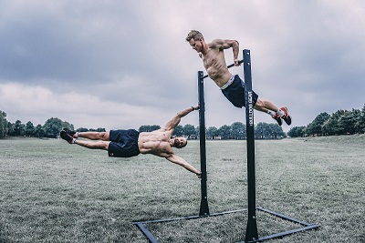

while(athlete.isMotivated()) {
athlete.performExercise(EXERCISE_PUSH_UP, 200);
athlete.performExercise(EXERCISE_PULL_UP, 50);
athlete.performExercise(EXERCISE_HANDSTAND_PUSH_UP, 50);
athlete.performExercise(EXERCISE_SQUAT, 200);
athlete.performExercise(EXERCISE_BRIDGE, 30);
}
Inhalt:
- Definition
- Warum es das beste ist
- Sechs Grundübungen
- Ausblick
Calisthenics
- Calisthenics (griechisch: kalos „schön“, „gut“ und sthenos „Kraft“) ist ein international gebräuchlicher Kulturbegriff, welcher Eigengewichtsübungen integriert. Calisthenics umfassen das Repertoire des klassischen Geräteturnens und diverse akrobatische Übungen. Externe Gewichte und Zubehör werden selten verwendet. Trainiert wird ausschließlich mit dem eigenen Körpergewicht. Gegenüber dem klassischen Krafttraining mit isolierten Übungen liegt der Schwerpunkt auf der intermuskulären Koordination. So kooperieren bei Übungen wie der "menschlichen Flagge“ verschiedene Muskelgruppen, um das Gleichgewicht zu halten. Die Stabilität des Körpers verbessert sich enorm.
Warum es das beste Training ist ...
Übungen mit Gewichten sind definitiv am effektivsten!
Weit gefeit! Man könnte ein Buch drüber schreiben. Um es aber kurz auf den Punkt zu bringen:
Dr. Christian ReisenauerEigengewichtstraining ist deshalb das beste Training, weil es das natürlichste ist.
Menschen wurden dafür geschaffen, sich zu bewegen. Wir sind dafür ausgelegt, unser Körpergewicht zu stemmen, und irgendwo hochzuziehen, auf den Händen zu gehen. Leider geht diese Fähigkeit vielen Menschen ab - weil sie sie verlernen. Unser modernes Leben erfordert all diese Fähigkeiten nicht mehr.
.....
Aus den folgenden sechs Grundübungen kann man sich vielerlei Variationen basteln, indem man einzelne Komponenten der Bewegung abändert. Dadurch entsteht eine unterschiedliche Belastung der Muskelgruppen, diese werden neuen Reizen ausgesetzt und bekommen einen Wachstumsimpuls. Zudem stärken die Übungen die Gelenke, und trainieren die Koordination sowie das Zusammenspiel vieler Muskelgruppen. Das Training ist somit effektiv und schonend zugleich.
Um es mit den Worten meines Mentors zu sagen:
Wer braucht da noch ein Fitnessstudio?
Die sechs Grundübungen
Hier möchte ich kurz sechs Grundübungen vorstellen, die man sehr gut variieren kann und welche alle Muskelgruppen des Körpers abdecken. Also aufgepasst!- Liegestütze
- Klimmzüge
- Beinheben
- Handstandliegestütz
- Squats (Kniebeugen)
- Brückenübungen